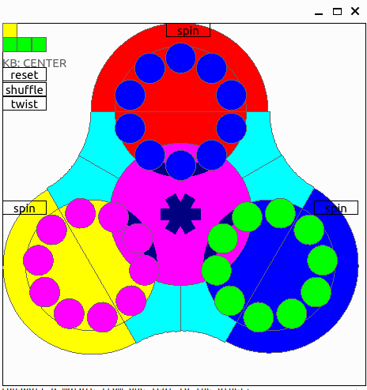

SPIN PUZZLE
SpinPuzzle is a strategy solitary game played on a special brett: it's goal is to group a list of marbles according to their color.
Game Goal and Structure
Board
The game is played on a structure with a Trefoil ([1]) shape where both side are used.
The brett of the game for every side is made up of a central disk (denoted CentralDisk) and three leaves (denoted as NorthLeaf, WestLeaf and EstLeaf). See Schema Game.
{kind=link}

Moves
On this brett the player can move a set of 60 marbels of 6 different colors (10 for each color) equally distributed on the two sides of the brett (threfoil).
The marbles are vincolated to different guides/rails.
- inside each leaf is present a circular trak and the marbles can be moved alonge this rail (green in Schema Game).
- the CentralDisk can rotate around its axis (orange in Schema Game).
- each leaf and the central disk share a common section of the traks: in this way it is possible to transport a marble from one leaf to the other. (magenta in Schema Game)
- The upper part of the Leaf can rotate around its x-axis (parallel to the X axis): in this way marbles from the different side of the trefoif can be mixed (cyan in Schema Game).
QSpinPuzzle
When you lunch the game the front Trefoil is shown.

- You have the possibility to move the marbles with the mouse dragging them, or using the keybord: To use the keybord you need first to select the component you want to operate on:
key N: NORTH leafkey E: EAST leafkey W: WEST leafkey I: Internal circle You can then rotate the marbles with thearrows. You can check the selected component in the status on the left corner (KB: <status>).
- In order to chnage the active side you can press the button "twist" (top left) or the
Key P. - In order to Spin a leaf you can press the corresponding button on the leaf or with the keyboard you can select the leaf and then press
PageUporPageDown - To shuffle the marbles with 10000 random operations you can press the button
shuffle. - reset will reorder the marbles in the original configuration.
Start the Game
- Start the executable
- press
shuffle - try to bring back the marbles in the original position, i.e. on each leaf only marble of a given color should be present.
Implementation
The implementation is quite straightforard:
- The UI is a QWidget that paint the Trefoil inside a QWindows
- The logic of the game is implemented in puzzle::SpinPuzzleGame which consits of two sides of puzzle::SpinPuzzleSide. Only a single side is active at some point in time. The user can rotate the marbles, the internal disk or spin the leafs with the given API from puzzle::SpinPuzzleGame.
- To iterate through the marbles you can use the iterators from puzzle::SpinPuzzleSide These iterator are dependent on the LEAF:
- for leaves NORTH, EAST, WEST the iterate circularly iterate though the marbles inside a LEAF
- for puzzle::LEAF::TREFOIL the iterator starts from the trefoil origin (i.e. first marble in the NORTH leaf) and iterate though all the marbles in sequence.
- A series of tests for the various operation can be found in
testsdirectory.
Dependency
- The appliction needs Qt (version 6)
- Qt library (Qt6)
- To generate the coverage results it requires
gcovandlcovapt install lcov - With doxygen you can have a good overview of the implementation.
TODOs
[ ] add a button to check if the game has been solved. [x] ...